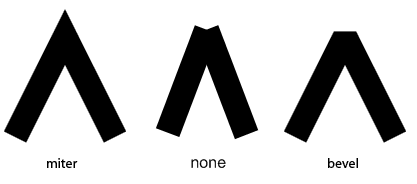

LineJoin
Line join style.

Constants
miter
The ends of the line segments beveled in an angle so that they join seamlessly.
none
No cap applied to the ends of the line segments.
bevel
Flattens the point where line segments join together.
See Also
love.graphics
love.graphics.setLineJoin